Ranking · 13.920 partidas reales
Cajas, killers y localizaciones ordenados de S a D por dificultad. No es una opinión: sale del % de victorias de 13.920 partidas registradas por la comunidad. Debajo, los tops que vota la gente.
S: menos del 55% de victorias, lo más duro · A: 55–62% · B: 62–69% · C: 69–75% · D: 75% o más, lo más asequible. Media de todas las partidas: 65,5%.
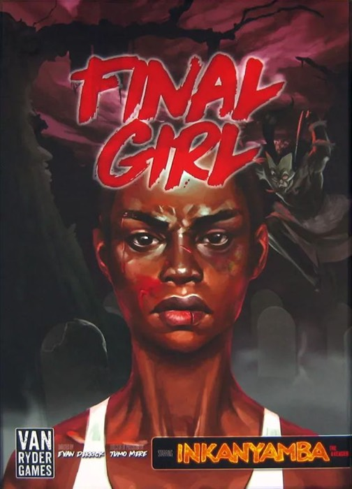
Slaughter in the Groves38% victorias · 141 part.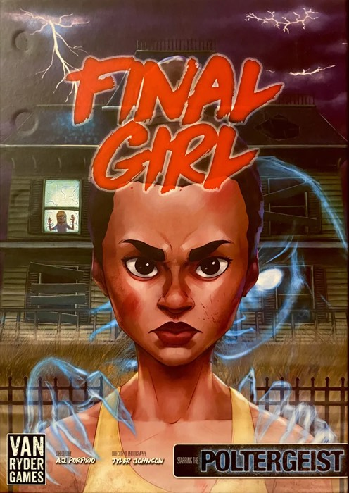
The Haunting of Creech Manor42% victorias · 238 part.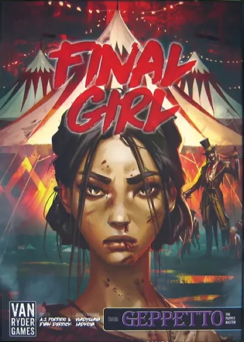
Carnage at the Carnival44% victorias · 233 part.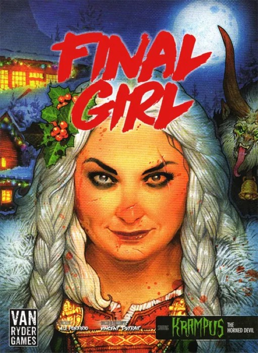
The North Pole Nightmare47% victorias · 180 part.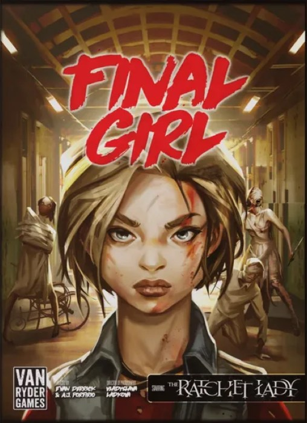
Madness in the Dark50% victorias · 148 part.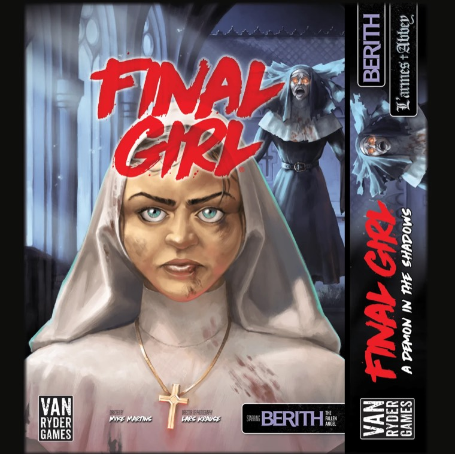
A Demon in the Shadows50% victorias · 64 part.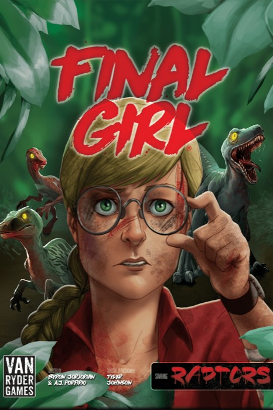
The Raptor Games54% victorias · 41 part.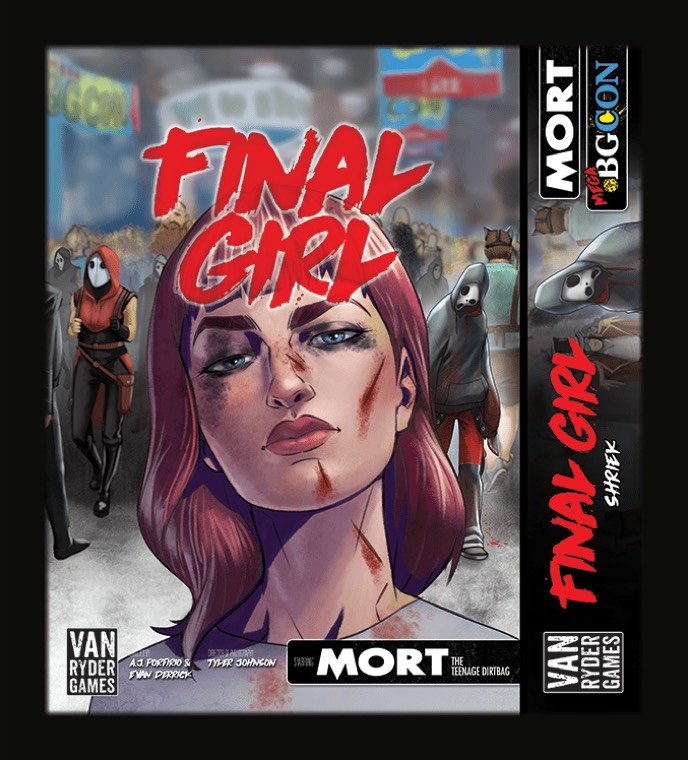
Shriek70% victorias · 122 part.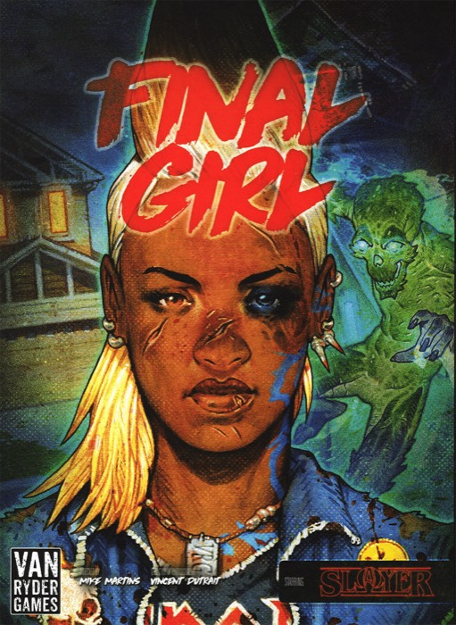
The Falconwood Files71% victorias · 126 part.A Rotten Harvest71% victorias · 76 part.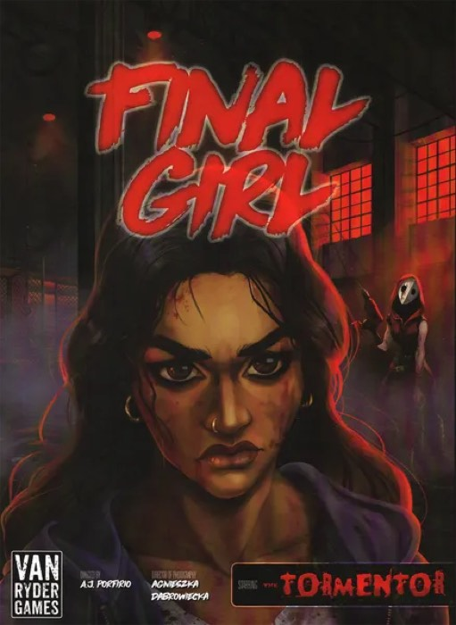
The Marrek Murders71% victorias · 164 part.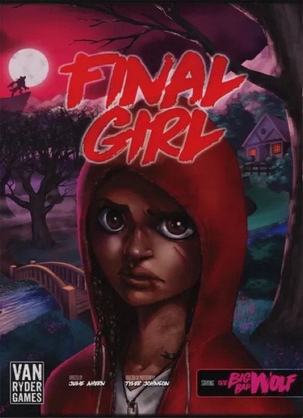
Once Upon a Full Moon75% victorias · 185 part.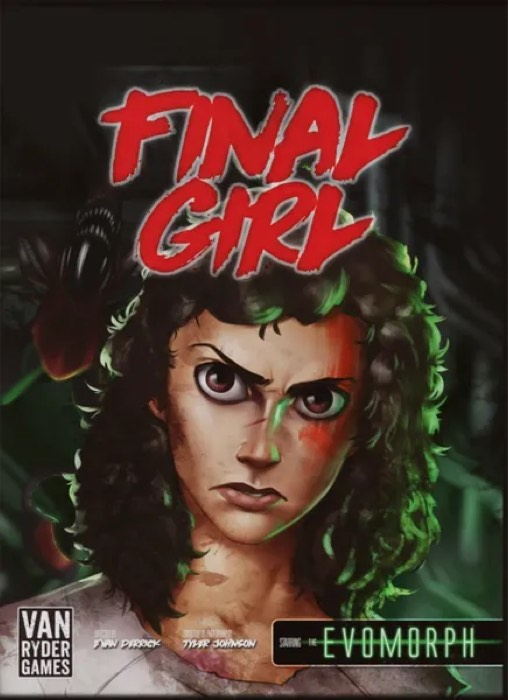
Into the Void75% victorias · 202 part.Solo killers con 60 partidas o más.
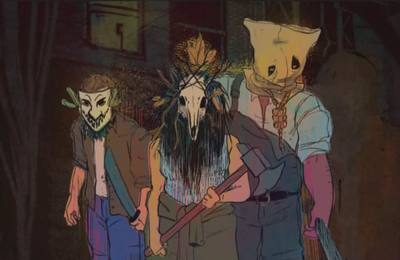
The Intruders62% victorias · 925 part.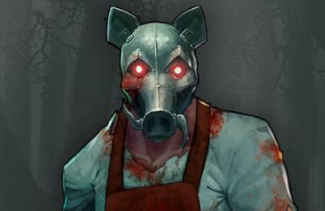
Hans64% victorias · 1.439 part.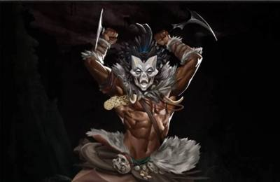
Inkanyamba64% victorias · 588 part.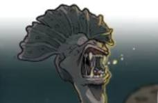
The Eyeless64% victorias · 491 part.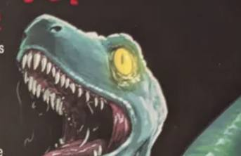
Raptors65% victorias · 62 part.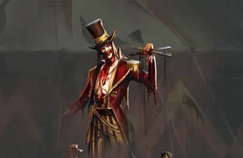
Geppetto65% victorias · 784 part.Ratchet Lady67% victorias · 683 part.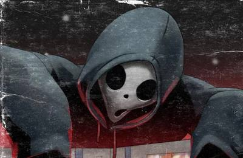
Mort69% victorias · 314 part.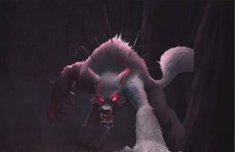
Big Bad Wolf71% victorias · 722 part.Hunter71% victorias · 470 part.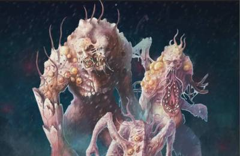
The Organism73% victorias · 750 part.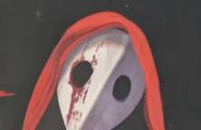
Tormentor74% victorias · 595 part.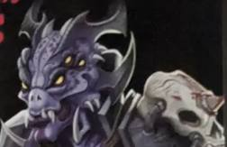
Volk'ar74% victorias · 77 part.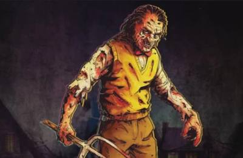
Dr. Fright74% victorias · 851 part.Solo localizaciones con 60 partidas o más.
Slaughter in the Groves, con un 38% de victorias en 141 partidas. Le siguen The Haunting of Creech Manor (42%) y Carnage at the Carnival (44%).
The Green Terror, con un 79% de victorias en 43 partidas. Detrás van Frightmare on Maple Lane (76%) y Into the Void (75%).
Terror from the Grave: solo se le gana el 51% de las veces (520 partidas). Después, Razorface (54%) y Poltergeist (56%).
Terror from Destiny, con un 80% de victorias en 258 partidas.
Sacred Groves, con un 45% de victorias en 852 partidas.
Con el % de victorias de 13.920 partidas reales que la comunidad apunta en una hoja pública. S es menos del 55% de victorias y D, el 75% o más. Se actualiza con los datos.
Aquí no mandan los datos sino los votos: mejor temporada, mejor película, mejor killer, la caja más fácil, la más difícil, la más inmersiva, la peor y la mejor localización. Vota el tuyo.
Elige hasta 3 por categoría: el 1º vale 3 puntos, el 2º 2 y el 3º 1.